La méthodologie génétique est une approche très performante pour étudier le fonctionnement des systèmes biologiques (gènes et protéines, réseaux de gènes et mécanismes pluri-moléculaires, cellulaires ou agissant au niveau de l'organisme). En effet, en perturbant un système, par exemple en enlevant une pièce d'un système, il est facile d'observer ce qui a changé dans son fonctionnement et donc de savoir à quoi sert la pièce manquante. En génétique, la démarche suivie consiste donc dans un premier temps à obtenir des mutants qui ont des défauts dans l'objet ou le processus que l'on étudie. Il existe deux grands types de démarches pour obtenir ces mutants: la méthode dite de génétique classique ou directe et la méthode dite de génétique inverse ou dirigée (figure 72). Bien qu'inventé plus tard, nous commencerons par la génétique inverse car c'est la méthode la plus utilisée actuellement, même si grâce aux nouvelles techniques de séquençage, la génétique directe redevient plus fréquemment utilisée.
Figure 65 : démarches suivies au cours des analyses de génétique classique ou inverse. Pour la génétique classique, la démarche démarre par la recherche de mutants sur des critères phénotypiques intéressants pour le processus étudié (mutants d'auxotrophie pour la biosynthèse des acides aminés, mutants de longévité pour le vieillissement, mutants arrêtés à une étape embryonnaire pour l'analyse du développement, etc.); c'est ce l'on appelle une mutagenèse qui aboutit à l'obtention de mutants indépendants. Il faut ensuite caractériser les mutations par les méthodes de la génétique classique. Ensuite, les différents gènes ainsi identifiés par des mutations et qui interviennent dans le processus sont clonés par des démarches de génétique moléculaire (clonage positionnel, par expression fonctionnelle ou séquences complètes des génomes mutants). La formulation de modèles passe par la caractérisation fine des mutants qui fait appel aux méthodes de la biochimie et biologie moléculaire, de la cytologie, de la génétique des interactions afin d'obtenir des mutants supplémentaires, et éventuellement de la génétique inverse pour vérifier certaines hypothèses. La génétique inverse consiste dans l'obtention par les techniques de l'ADN recombinant in vitro de mutations spécifiques dans des gènes dont on connait la séquence mais généralement pas le rôle, et la réintroduction de ceux-ci par transformation ou transfection dans un organisme afin d'obtenir des mutants de ces gènes; les effets obtenus sont ensuite analysés par les mêmes techniques que ceux obtenus par mutagenèse classique afin de formuler des modèles de fonctionnement. Ceci aboutit souvent à l'identification de nouveaux gènes candidats qui vont pouvoir à leur tour être analysés par génétique inverse.
Les technologies de l'ADN recombinant et la mutagenèse dirigée
La mutagenèse dirigée consiste en la création artificielle in vitro de mutations dans une séquence connue d'ADN ou comme nous le verrons de constructions de "cassettes" permettant d'inactiver/muter les gènes, suivi de leur introduction dans des cellules afin de les muter. Une cassette est une séquence d'ADN construite in vitro par les technologies de l'ADN recombinant (digestion enzymatique par des enzymes de restriction et religation, fabrication par PCR et PCR-fusion de gènes tronqués ou fusionnés, mutagenèse ponctuelle dirigée avec le système Ung-/Dut-, etc.); je vous renvoie vers les cours de Biologie Moléculaire pour le détail des constructions). Les cassettes une fois introduites vont avoir différents devenirs en fonction de leur caractéristiques, mais souvent elles vont devoir s'intégrer au sein du/des chromosome(s) de la cellule par recombinaison. Nous allons donc voir plus en détail ces deux mécanismes avant d'expliquer plusieurs stratégies de modifications des gènes.
Les mécanismes de la transformation
Nous avons vu que le principe de la transformation a été découvert par Frederick Griffith (voir la section "Frederick Griffith en 1928 découvre la transformation génétique") en étudiant la bactérie Streptococcus pneumoniae. Cette bactérie est naturellement compétente à intégrer de l'ADN exogènes comme beaucoup d'autres bactéries, car il existe plusieurs dizaines d'autres espèces appartenant à de nombreux phyla bactériens pour lesquelles une compétence naturelle à la transformation a pu être démontrée. Celle-ci ne se produit toutefois pas à toutes les étapes du cycle cellulaire et il faut souvent des conditions particulières pour qu'elle se déroule. Il existe aussi des méthodes qui vont permettre de rendre compétentes des cellules bactériennes réfractaires. Les techniques sont multiples et visent à modifier l'enveloppe bactérienne, ce qui va entraîner le démasquage du système qui va permettre l'import de l'ADN. Celui-ci semble reposer principalement sur les protéines de la famille Com qui permet l'entrée d'ADN sous forme linéaire simple brin lors de la compétence naturelle (figure 73). Cependant, chez Escherichia coli, la compétence artificielle inhibe l'entrée via ce système et active l'entrée via la protéine OmpA de la membrane externe; dans ce cas l'ADN entre sous forme double brin éventuellement circulaire dans le cas des plasmides.
Figure 66 : le système Com responsable de l'incorporation de l'ADN au sein de la cellule chez Streptococcus pneumoniae. L'ADN est piégé par le pilus ComGC, est transmis au complexe ComEC et pénètre dans la cellule sous forme simple brin, l'autre brin étant dégradé par la nucléase EndA. Ce système est présent chez de nombreuses bactéries Gram+, mais aussi chez des Gram-, chez qui l'ADN utilise la protéine pilQ pour traverser la membrane externe.
Il existe néanmoins de nombreuses espèces bactériennes pour lesquels la transformation est inefficace ou nulle. Pour faire entrer de l'ADN dans ce type de bactéries, les scientifiques utilisent plutôt le phénomène de conjugaison (voir figure 37) avec une bactérie donneuse facilement transformable qui va recevoir la cassette par transformation comme Escherichia coli, et la bactérie réfractaire à la transformation comme receveuse. Le clonage des cassettes se fait donc dans des plasmides conjugatifs comme l'épisome F et le processus va nécessiter des marqueurs (généralement de résistances à des antibiotiques) pour sélectionner les conjuguants et contre sélectionner les souches donneuses (figure 74).
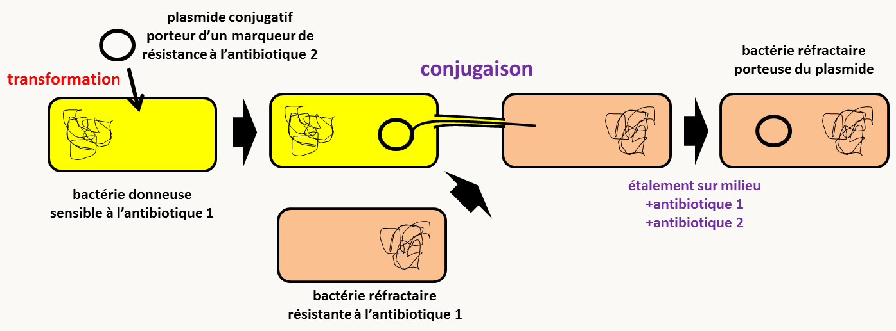Figure 67 : transformation en deux temps de bactéries réfractaires à la transformation.
Chez les eucaryotes, il semble aussi exister une transformation naturelle qui a été mise en évidence pour l'instant uniquement chez Saccharomyces cerevisiae; elle se produit vraisemblablement peu fréquemment. Elle permet par exemple d'expliquer la présence dans les génomes eucaryote de gènes provenant d'espèces éloignées qui peuvent être soit des procaryotes soit des eucaryotes. On parle alors de transferts horizontaux de gènes (qui sont bien évidemment beaucoup plus fréquents chez les bactéries!). Néanmoins, il faut souvent rendre les cellules eucaryotes compétentes pour faire entrer de l'ADN. Chez les organismes contenant une paroi comme les levures ou les champignons filamenteux, il suffit souvent de l'enlever en utilisant des enzymes pour obtenir des protoplastes, c'est à dire des cellules dépourvues de paroi. On peut aussi ajouter aux cellules intactes ou aux protoplastes du PEG (=polyéthylène glycol) qui semble agir en déstabilisant les membranes et/ou un cation (Li+ ou Ca2+) et/ou faire un choc thermique qui semblent aussi participer de manière synergique à la déstabilisation de la membrane. Alternativement, il est possible de faire un choc électrique qui va avoir aussi un effet déstabilisateur sur les membranes; ce type de transformation est appelé électroporation. A chaque espèce d'eucaryote, un protocole particulier mis en place par essais/erreurs va devoir être utilisé. Le mécanisme de pénétration de l'ADN a été étudié chez Saccharomyces cerevisiae et il met en jeu des endocytoses suivies probablement de rupture de la vésicule d'endocytose (figure 75). L'ADN peut donc entre sous toutes ses formes: linéaire, circulaire, simple brin ou double brin.
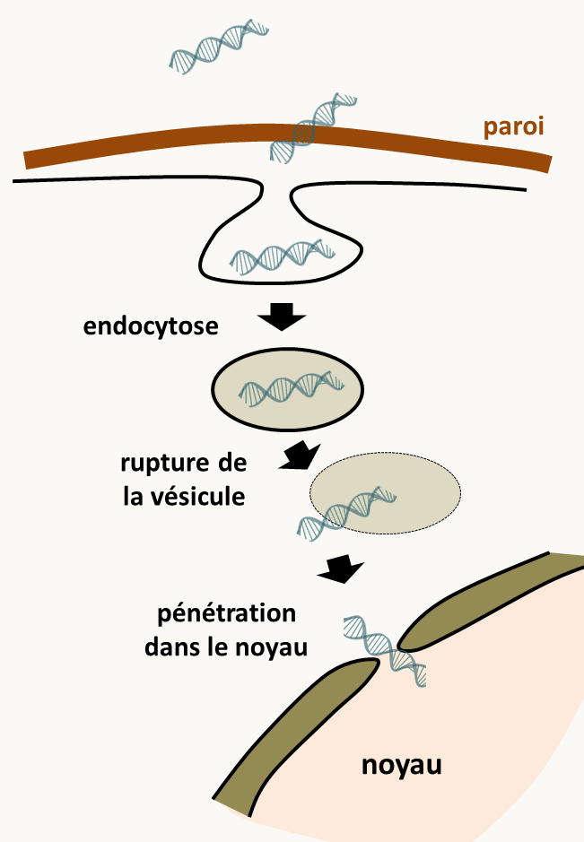Figure 68 : mécanisme principal de transformation chez Saccharomyces cerevisiae. Le passage de la paroi n'est pas encore clairement expliqué. Il n'est pas exclu qu'il existe une autre voie mineure d'entrée.
Pour les eucaryotes réfractaires, il est possible d'utiliser la transformation par Agrobacterium tumefaciens qui naturellement injecte de l'ADN linéaire aux plantes qu'elle infecte. Celui-ci est porté par un large plasmide appelé Ti (voir figure 38). Des modifications du plasmide (figure 76) vont permettre la mise au point de systèmes de transformation efficaces, en transformant dans un premier temps Agrobacterium tumefaciens et ensuite en transférant les cassettes dans les eucaryotes. Bien évidemment, des plantes, mais aussi des champignons, des algues et des animaux ont été transformés avec succès de cette manière.
Figure 69 : plasmide typique utilisé pour transformer des cellules eucaryotes via A. tumefaciens. Le plasmide porte un marqueur de sélection (résistance) qui permet la sélection à la fois dans E. coli et A. tumefaciens. Une origine de réplication permet la réplication dans E. coli et une autre la réplication dans A. tumefaciens. La région STA assure la stabilité du plasmide dans A. tumefaciens. Ces régions vont permettre d'amplifier le plasmide dans un premier temps en utilisant E. coli et dans un second de le transférer dans A. tumefaciens. La région transférée dans la cellule eucaryote est délimitée par deux frontières de séquences spécifiques. Entre ces deux frontières sont introduits un marqueur de sélection qui fonctionne dans l'organisme à transformer (un gène de résistance à un antifongique ou un herbicide par exemple) et des sites de clonage multiple qui vont permettre d'insérer les cassettes. L'ADN est donc transféré sous forme linéaire double brin.
Il existe aussi une méthode "brutale" pour transformer les cellules: leur tirer dessus avec un canon à ADN! Cette méthode de transformation dite par "biolistique" (figure 77) permet de transformer tous types de cellules et surtout leurs organites comme les mitochondries et les plastes qui ne peuvent pas être transformés en utilisant les méthodes classiques.
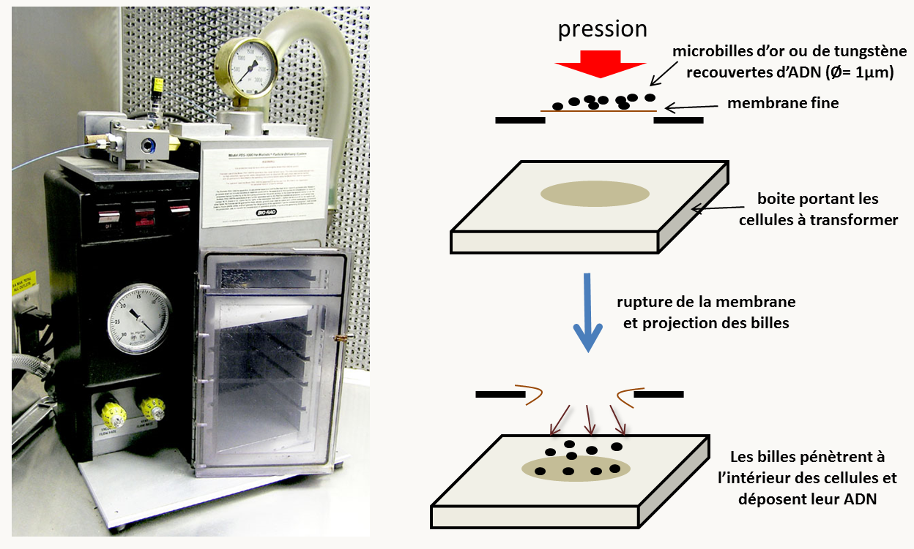Figure 70 : la transformation par biolistique. A gauche la machine et à droite son principe de fonctionnement. Les paramètres à optimiser incluent la vitesse d'éjection (qui se règle en faisant varier la finesse (=solidité) de la membrane), la nature des billes (or ou tungstène, diamètres plus ou moins grands mais de l'ordre du micron), et le protocole de fixation de l'ADN sur les billes (tampon utilisé...).
Notez que les méthodes présentées dans ce paragraphe sont les plus communes et qu'il en existe d'autres basées par exemple sur l'infectiosité de virus, l'injection à l'aide d'une aiguille dans les œufs de vertébrés, de drosophile ou de Caenorhabditis elegans, ou directement sur la capacité des eucaryotes phagotrophes à incorporer des particules alimentaires. Dans la plupart des cas, l'efficacité de transformation est faible et il faut donc un moyen pour sélectionner les cellules ayant subi une transformation appelées transformants. Les deux moyens les plus courants sont:
la présence dans l'ADN d'un marqueur de résistance à une substance toxique et l'utilisation comme réceptrice d'une souche sensible à cette substance. Les transformants sont sélectionnés sur leur résistance.
la présence dans l'ADN d'un gène impliqué dans la biosynthèse d'un métabolite et l'utilisation comme réceptrice d'une souche auxotrophe mutée pour ce gène. Les transformants sont sélectionnés sur leur retour à la prototrophie.
Le devenir de l'ADN une fois dans la cellule
Une fois dans la cellule l'ADN peut avoir différents devenirs en fonction de séquences qu'il porte et de la forme, simple ou double brin, linéaire ou circulaire, sous laquelle il entre dans la cellule. L'ADN simple brin doit redevenir double brin et/ou circulaire dans le cas des plasmides circulaires, ce qui est pris en charge par la machinerie cellulaire. Ensuite, l'ADN peut être répliqué s'il possède une origine de réplication. C'est bien évidemment le cas des plasmides qui vont porter leur propre origine de réplication, mais c'est aussi le cas si l'ADN porte une origine de réplication chromosomique. Chez Saccharomyces cerevisiae, ce type de séquence s'appelle ARS pour "Autonomously Replication Sequence". Leur présence permet de maintenir sous forme extrachromosomique des ADNs sous forme circulaire à environ une vingtaine de copie/noyau. Ceux-ci sont mal ségrégés en mitose/méiose et sont souvent perdus sauf s'ils possèdent une séquence CEN (pour Centromérique) qui va faire baisser le nombre de copie par cellule (2/3 par cellule) mais assurer une répartition équitable au cours des divisions. Chez les autres eucaryotes, les séquences ARS ne sont généralement pas fonctionnelles et il n'existe pas de plasmides nucléaires. L'ADN ne peut donc pas se répliquer; néanmoins chez Schizosaccharomyces pombe, la séquence ARS1 et l'origine de réplication du plasmide 2µ sont fonctionnelles. De manière intéressante, l'adjonction de séquences télomériques aux deux extrémités de la séquence d'ADN permet souvent son maintien sous forme extrachromosomique double brin, mais avec une grande instabilité; ceci a été montré par exemple chez Podospora anserina.
Si l'ADN ne peut pas se répliquer la seule manière qu'il a pour être conservé est d'être intégré dans le génome: on parle alors de transformation intégrative. Cette intégration se produit grâce aux phénomènes de recombinaison dont nous allons voir les principaux mécanismes. Notez qu'il existe plusieurs autres mécanismes qui ne seront pas évoqués ici. je vous renvoie vers les cours de Biologie Moléculaire pour en savoir plus sur la recombinaison.
Les mécanismes principaux de la recombinaison
Dans son sens le plus large le recombinaison est la réorganisation du génome, soit par réassortiment au hasard des chromosomes à la méiose (c'est à dire par le brassage chromosomique), soit plus spécifiquement par la cassure et le recollage réassorti des brins d’ADN, comme ce qu'il se passe au cours des crossing-over méiotiques. C'est souvent ce dernier type de mécanisme qui définit la recombinaison au sens plus strict des biologistes moléculaires. Il existe en trois grands groupes: la recombinaison homologue, la recombinaison non-homologue et la recombinaison spécifique à un site particulier. Nous allons voir un exemple de chacune de ces recombinaisons.
La recombinaison homologue
La recombinaison homologue se produit entre deux molécules d'ADN de séquences identiques ou pour le moins très proches: pour se produire de manière efficace il faut en général au moins deux régions de quelques dizaines à quelques centaines de paires de bases et dont les séquences ne divergent pas plus de 5-10% (séquences dites homéologues), mais ces chiffres varient en fonction des espèces. Saccharomyces cerevisiae est par exemple moins regardante qu'Escherichia coli quant à la ressemblance des deux séquences et la recombinaison homologue est très efficace même entre courtes régions d'une cinquantaine de paires de bases. Chez Podospora anserina, la taille minimale pour une efficacité élevée de recombinaison homologue est plutôt de 500 bp, même si elle peut se produire entre deux séquences de 200 pb. Le mécanisme principal de la recombinaison homologue est la réparation des ADN double brin, ou le "Double Strand Break Repair" en bon franglais (figure 78).
Figure 71 : le Double Strand Break Repair entraîne soit la production de conversions soit de crossing over. Lorsqu'un ADN subit une cassure double brin, il peut être réparé en utilisant une molécule d'ADN homologue, c'est à dire possédant la même séquence. Cela peut être le cas dans une cellule diploïde et dans ce cas la deuxième copie peut servir de matrice. Mais c'est aussi le cas après réplication chez les bactéries et les eucaryotes haploïde (en phase G2). Éventuellement, une séquence homologue/homéologue située ailleurs dans le génome peut être utilisée, ce qui conduira à un réarrangement (voir figure 60). La réparation commence par la résection simple brin au niveau de la cassure par une nucléase spécifique et la reconnaissance et l’appariement des deux séquences. Puis, l'ADN du brin intact est ouvert et la portion simple brin d'une des deux extrémités libre du brin à réparer vient s'hybrider avec le brin intact. Le remplissage des "trous" par une polymérase et la fermeture des simples-brins par une ligase conduit à une structure possédant deux jonctions de Holliday. Cette double jonction est résolue par une résolvase et conduit en fonction de l'action de la résolvase au niveau de chaque jonction soit à une conversion soit à un crossing-over (voir figure 79). Les enzymes impliqués dans ce mécanismes sont très conservés au cours de l'évolution: système RecA,B,C,D chez les bactéries et gènes rad/XP/ERCC chez les eucaryotes.
La résolution des jonctions de Holliday (figure 79) est une étape clé de la recombinaison car en fonction de la façon dont elle est résolue, il y aura une conversion, c'est à dire à un remplacement sur la molécule cassée d'une courte séquence située au niveau de la cassure par celle de la molécule intacte, ou un crossing-over.
Figure 72 : la résolution de la jonction de Holliday se fait par deux nouvelles coupures des simples brins. Suivant la position de ces coupures on aura ou non échange de séquences flanquantes. Par exemple, s’il y a coupure et raboutage des deux brins qui ont subi l’échange (flèches orangées), il n’y aura pas de crossing-over visible et seul un très petit fragment est échangé sur un seul brin. En revanche si les deux coupures ont lieu sur les deux brins qui n’ont pas subi l’échange (flèches roses), un crossing-over se produira.
La recombinaison homologue est donc un produit dérivé d'un mécanisme impliqué initialement dans la réparation des cassures doubles brin. Chez la Saccharomyces cerevisiae c’est même la principale stratégie de réparation des cassures double-brin. Il a été co-opté en méiose pour faire des crossing-over. En effet, la recombinaison méiotique commence par la génération programmée de coupures double brin le long des chromosomes en prophase de première division de méiose par la protéine SPO11. Ces coupures et leurs résolutions en crossing-over versus conversion (figures 78 et 79) se produisent selon un profil régulé génétiquement si bien par exemple que la présence d'un premier crossing-over inhibe généralement la survenue d'un deuxième proche; ce processus s'appelle interférence. La répartition des cassures assurent en fait que virtuellement chaque chromosome subira un au moins un crossing-over, mais pas une multitude (généralement moins de 5). La réparation peut aussi se produire dans des noyaux diploïdes lors du cycle cellulaire non méiotique, elle peut alors générer des crossing-over mitotiques. Elle participe à des programmes cellulaires qui visent à exprimer différentiellement des gènes comme par exemple l'interconversion des gènes de type sexuel MATa et MATα chez Saccharomyces cerevisiae ou la variation des antigènes de surface des trypanosomes responsable de la maladie du sommeil qui leur permet d'échapper au système immunitaire. Enfin, ce système va permettre l'intégration d'ADN exogène au sein du génome cellulaire. Il faut donc que l'ADN transformant contienne une région homologue/homéologue à une région du génome de la cellule hôte. L'intégration d'une molécule circulaire nécessite un seul crossing-over alors que celle d'un ADN linéaire en requiert deux, conduisant respectivement à l'intégration de la molécule circulaire et le remplacement de la région située entre les deux crossing-over (figure 80).
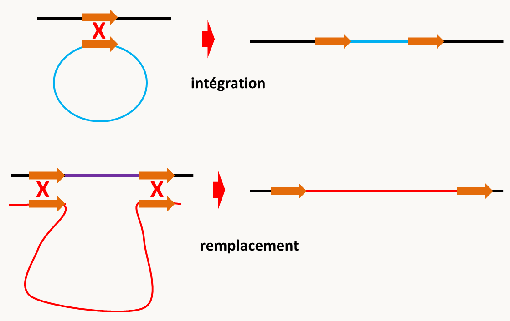Figure 73 : modes d'intégration d'ADNs exogènes par recombinaison homologue.
La recombinaison non-homologue
La présence d'extrémités d'ADN, telles que celles présentes après une cassure active d'autres systèmes de recombinaison qui n'ont pas besoin d'homologie de séquences. Chez les eucaryotes, le système principal est basé sur les protéines ku70 et ku80 faisant partie du système NHEJ pour Non-Homologous End-Joining, en français le système de jonction d'extrémités non homologues (figure 81). Celui-ci va religuer entre elles des extrémités d'ADN libres indépendamment de la présence d'homologie de séquence.
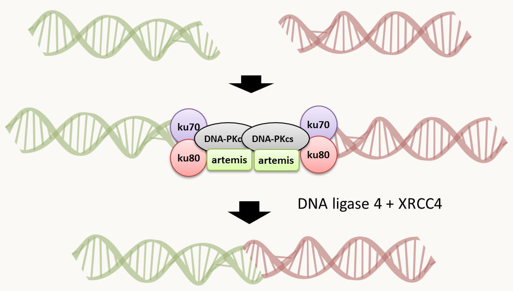Figure 74 : le système NHEJ.
Il va donc conduire à l'intégration aléatoire dans le génome de l'ADN exogène à un site de coupure aléatoire. Notez que fréquemment, l'ADN intégré a subit des remaniements (délétion, concaténation...) avant son intégration. On dit qu'il s'intègre alors de manière ectopique, en opposition aux intégrations homologues. De fait, lors de transformations, il y a une compétition entre les systèmes de recombinaison homologue et non-homologue. Les proportions respectives entre les deux est une caractéristique propre à chaque espèce qui fluctue en fonction de la taille de la région d'homologie et de la nature de l'ADN utilisé comme le montre la table suivante:
% d'intégration homologue
Chlamydomonas reinhardtii
1‰ à 2.5%
Physcomitrella patens
>50% dès que la région d'homologie > 1 kb
Arabidopsis thaliana
0% (situation de toutes les plantes "supérieures")
Dictyostelium discoideum
~1%
Saccharomyces cerevisiae
>90% dès que la région d'homologie >50 bp
Podospora anserina
1-10% si taille de la région d'homologie < 10 kb et 30% si taille > 20 kb
Dans le cas où le pourcentage de recombinaison homologue est faible, les généticiens utilisent maintenant des souches receveuses dans lesquels les gènes codant les sous-unités ku70 ou ku80 ont été inactivés. Dans de telles souches, la fréquence de recombinaison homologue dépasse le plus souvent 90% voire 99%.
La recombinaison "site-spécifique"
La recombinaison site-spécifique, comme son nom l'indique, se fait entre deux séquences spécifiques, souvent identiques. Elle nécessite un couple d'acteur comprenant une recombinase et un site de reconnaissance sur l’ADN au niveau duquel elle coupe. Ce type de système a souvent évolué dans des systèmes viraux ou épisomiques pour catalyser l'intégration de l'ADN infectieux dans le génome, ce qui au cours de l'évolution permet leur maintien fidèle au cours des générations. Il en existe plusieurs exemples dont certains sont mis à profit en génétique moléculaire pour faire de la recombinaison dirigée, comme le système de l'intégrase Int/xis et les sites attB/attP pour l’insertion du phage λ dans le chromosome d'Escherichia coli, et surtout la recombinase Cre et son site de reconnaissance site loxP qui dérivent du phage P1 (système CRE/LOX) et la "flipase" FLP du plasmide 2µ de Saccharomyces cerevisiae et son site FRT (système FLP/FRT). La taille des sites de reconnaissance est en général variable mesurant de quelques paires de bases à quelques dizaines de paires de bases; notez que que les sites FRT et loxP mesurent la même taille de 34 pb et ont la même structure car ils sont constitués de deux régions palindromiques de 13 bp séparée par un espace de 8 pb ou spacer (figure 82). Deux sites FRT sont en positions inversées sur le plasmide 2µ. La recombinaison permet donc d'inverser une région du plasmide (figure 82). Dans le cas de loxP, la recombinaison permet d'intégrer inefficacement P1 dans le chromosome d'Escherichia coli à un site variant appelé loxB (figure 82). Par contre, la recombinaison entre deux sites loxP est très efficace.
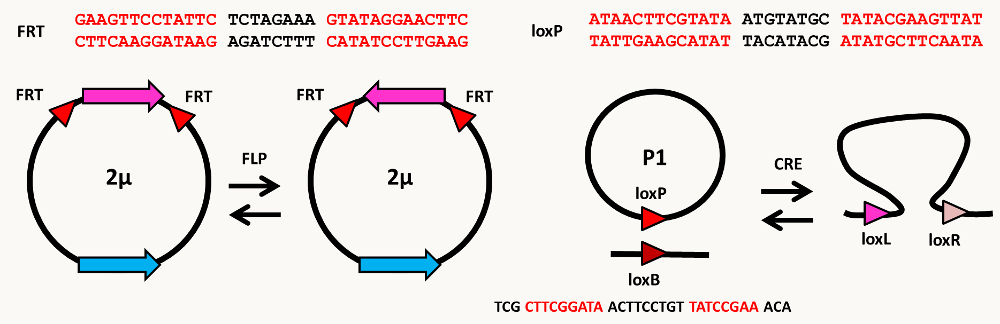Figure 75 : les systèmes CRE/LOX et FLP/FRT. En haut, les sites reconnus FRT et loxP. En bas, les réactions catalysées naturellement par FLP et CRE.
Ces systèmes de recombinaison sites-spécifiques ont permis la mise au point d'outils génétiques très intéressants. Notez que CRE/LOX est très utilisé dans la souris alors que FLP/FRT l'est dans la drosophile. Nous reviendrons sur leur utilisation lorsque nous aurons vu quelques méthodes pour modifier les gènes, ce qui est le but de la section suivante.
Dans la section suivante nous allons en particulier voir qu'actuellement, il est possible de modifier à volonté le génome grâce au système CRISPR/CAS9. Cependant, d'autres techniques plus anciennes sont toujours utilisées pour modifier les gènes. Nous en verrons seulement quelques-unes d'entre elles. Pour rappel, la démarche est la suivante:
création d'un système qui permet d'obtenir une modification du gène ou de son expression in vitro, sous forme d'un fragment d'ADN appelé une cassette
introduction de la cassette dans la cellule par transformation
criblage des transformants et vérification de la fonctionnalité de l'ADN mutant introduit, car la transformation génétique est en général un phénomène rare (voir section ci-dessus sur la transformation) et l'ADN introduit dans la cellule peut avoir un devenir complexe (voir section ci-dessus sur la recombinaison).
La première étape relève de votre cours de biologie moléculaire et je n'insisterai pas sur les moyens d'obtenir les cassettes. J'insisterai donc plus sur les stratégies à utiliser et leurs limites.
Comment inactiver un gène
Actuellement, il existe de nombreuses techniques pour inactiver des gènes et ainsi obtenir des allèles nuls. La technologie utilisée dépend de l'organisme et de ses propriétés biologiques. La première méthode mise au point consistait à transformer la cellule avec une molécule d'ADN circulaire portant un petit morceau du gène à inactiver pour obtenir ce que l'on appelle une disruption (figure 83). Cependant, ce type de mutation peut dans certains cas ne pas être nul car un petit morceau de la protéine est fabriquée. Il est donc conseillé de faire plutôt un remplacement de gène (figure 83) ce qui implique la transformation avec un fragment d'ADN linéaire et deux crossing-over. Dans les deux cas, il faut sélectionner les transformants, ce qui est fait le plus souvent grâce aux deux systèmes de sélection présentés ci-dessus et qui sont pour rappel:
la présence dans l'ADN à transformer d'un marqueur de résistance à une substance toxique et l'utilisation comme réceptrice d'une souche sensible à cette substance. Les transformants sont sélectionnés sur leur résistance.
la présence dans l'ADN d'un gène impliqué dans la biosynthèse d'un métabolite et l'utilisation comme réceptrice d'une souche auxotrophe mutée pour ce gène. Les transformants sont sélectionnés sur leur retour à la prototrophie.
Figure 76 : les premiers systèmes d'inactivation de gènes.
Ce système est largement utilisé chez les champignons (levures et filamenteux; figure 84), Chlamydomonas ou même la souris chez qui l'inactivation de gènes prend plus d'étapes du fait qu'il faut transformer des cellules en culture et ensuite les réintroduire dans des embryons afin d'obtenir des souris mutantes (figure 85).
Figure 77 : remplacement de gènes chez Saccharomyces cerevisiae en utilisant le marqueur d'auxotrophie à l'uracile URA3. Il est possible de faire le remplacement directement sur une souche haploïde mais si le gène est essentiel, aucun mutant ne sera obtenu. Il est donc conseillé comme sur le schéma de transformer avec la cassette de remplacement une souche diploïde. Dans ce cas, une seule des deux copies est remplacée car le remplacement simultané des deux copies est extrêmement rare. Les transformants sont sélectionnés sur leur retour à la prototrophie alors que la souche de départ est auxotrophe pour l'uracile. L'efficacité du remplacement est telle que seule une vérification par PCR est nécessaire pour s'assurer que le remplacement a bien été fait. Pour ceci, il faut utiliser des amorces situées à l'extérieur de la région d'homologie utilisée pour faire le remplacement (amorces 1 et 2). Seuls les transformants ayant un remplacement correct donneront des bandes de tailles connues en utilisant les couples d'amorces 1+3 et 2+4. Une méiose permet d'obtenir des tétrades. Si les 4 ascospores sont viables alors le gène n'est pas essentiel. Si seulement les deux spores URA3- sont viables alors le gène est essentiel. Chez les champignons filamenteux, il est recommandé de vérifier la délétion par Southern blot car il existe des évènements d'insertion complexes ou l'allèle remplacé et l'allèle sauvage sont tous les deux présents. De même, la plupart étant essentiellement haploïdes, l'obtention de remplacement de gènes essentiels est plus difficile mais pas impossible.Figure 78 : remplacement de gènes chez la souris. Dans le cas d'organismes pluricellulaires, il faut transformer la lignée germinale, ce qui n'est pas simple même si des systèmes à base de virus peuvent être envisagés. Dans le cas de la souris, le plus simple est de faire le remplacement de gènes sur des cellules totipotentes en utilisant la résistance à la généticine (=G418). Comme dans le cas de la levure, une seule des deux copies est remplacée. La vérification d'abord par PCR comme chez la levure permet de trier les candidats. Il est recommander de vérifier ces candidats par Southern Blot car il existe des évènements d'intégration complexes que seul une analyse plus poussée permet de cribler. Une fois le remplacement assuré, la lignée totipotente mutante est injectée dans des embryons de souris; il est recommandé de choisir des souris de phénotypes différents pour faciliter la détection des souriceaux chimère ou mosaïques qui vont résulter de l'intégration des cellules injectées dans l'embryon; des souris ayant des différences de couleur de pelage offrent une façon simple de trier. Il faut aussi espérer que la lignée germinale des souris mosaïques F0 contient des cellules mutantes afin que leur descendance F1 contienne la mutation; sa présence peut être détectée par PCR comme indiqué figure 84. La descendance F1 sera hétérozygote et devrait donc vivre. Le croisement des descendants hétérozygotes entre eux permet d'obtenir les homozygotes afin d'évaluer leur phénotype. La présence du remplacement et de l'allèle sauvage par PCR permet de déterminer le statut des descendants F2 car ceux-ci peuvent toujours être hétérozygotes ou homozygotes sauvages.
Ces méthodes de remplacement de gènes sont maintenant bien maîtrisées chez de nombreux organismes eucaryotes, en particulier chez Saccharomyces cerevisiae, chez qui les collections des délétions de tous les gènes ont été générées de cette manière en utilisant le marqueur de résistance à la kanamycine A. Je reviendrai sur ces collections dans la section sur la mutagenèse classique car elles peuvent être utilisées pour sélectionner des mutants facilement. De même une collection de délétion de la majorité des gènes de Neurospora crassa est aussi disponible. Chez la souris, il existe des compagnies de biotechnologie qui font le travail pour vous... Dans le cas des bactéries, la stratégie est légèrement différentes (figure 86).
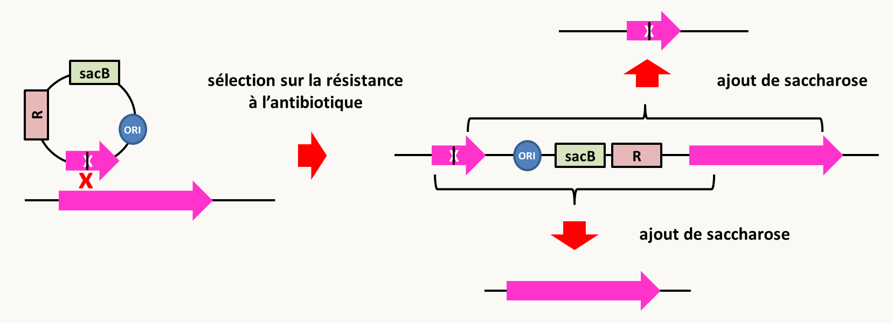Figure 79 : remplacement de gènes chez Bacillus subtilis. Voir texte pour le détail de la stratégie.
En effet, chez beaucoup de bactéries, les délétions passent par l'utilisation de plasmides "suicide", c'est à dire incapable de se répliquer, ce qui va forcer leur intégration dans le génome. Il existe plusieurs stratégies pour ce faire. On peut par exemple construire la cassette de délétion (une délétion interne du gène "rose" dans la figure 86) dans un plasmide qui se réplique chez Escherichia coli mais qui ne se réplique pas chez la bactérie pour laquelle on souhaite déléter le gène (Bacillus subtilis dans la figure 86). De manière alternative il existe des origines de réplication thermosensibles. Il suffit donc de passer les bactéries à température non permissive et de sélectionner le maintien du plasmide en incorporant l'antibiotique que le marqueur de résistance R sert à détoxiquer. Un évènement de recombinaison homologue permet d'obtenir l'intégration au gène et une structure où les copies délétées et intactes entourent le plasmide. Celui-ci porte un deuxième gène qui va permettre une "contre sélection" de l'intégration, ici le gène sacB qui permet la production d'une substance toxique en présence de saccharose chez Bacillus subtilis. Cela va permettre de sélectionner des évènements de recombinaison entre les copies intactes et délétées qui vont conduire à l'élimination le gène sacB. En fonction des sites du crossing-over (indiqués dans la figure par les extrémités des accolades), il y a le maintien de la copie sauvage ou le remplacement par la copie mutée. Il existe des collections de mutants pour tous les gènes non essentiels chez de nombreuses bactéries dont Escherichia coli, Bacillus subtilis ou encore Acinetobacter baylyi.
Enfin, il est possible de raffiner ces méthodes (figure 87), en particulier chez la souris chez qui il est possible de fabriquer des souches où le gène à déléter est entouré de sites loxP. L'action de la recombinase CRE est alors contrôlée spécifiquement dans un tissu grâce à un promoteur spécifique ou par l'ajout d'une molécule provoquant la délétion seulement dans un tissu ou au moment voulu.
Figure 80 : remplacement contrôlé de gènes chez la souris. L'utilisation du système CRE/LOX permet de choisir le lieu et/ou le moment de la délétion. Pour cela, il faut construire des souris portant deux sites loxP autour du gène à déléter. Cela nécessite deux transformations successives avec des cassettes permettant l'insertion des sites loxP en même temps que les marqueurs de sélection qui sont la résistance à la néomycine et à la puromycine. L'apport de la recombinase CRE se fait en croisant des souris obtenues aussi par transgénèse et qui exprime la recombinase soit à partir d'un promoteur fonctionnel dans un lignage cellulaire ou en réponse à un inducteur (la tétracycline par exemple), ce qui va provoquer la recombinaison entre les sites loxP (et donc la délétion du gène) de manière contrôlée.
Néanmoins, malgré la popularité de ces méthodes, il existe des organismes chez lesquels la recombinaison homologue est trop rare pour que la sélection de mutants soit possible (voir le tableau ci-dessus). Chez ces organismes des méthodes alternatives ont été développées. Elles utilisent soit des phénomènes d'interférences à ARN (RNAi), soit le système CRISPR/CAS9.
Par exemple, chez Caenorhabditis elegans, la recombinaison homologue est très rare. Mais comme chez une vaste majorité d'eucaryotes (des phénomènes identiques ont été observés chez les vertébrés, les plantes, certains champignons, et des protistes divers), il a été observé que l'injection d'ARN doubles brins correspondant à un gène aboutit à l'extinction de l'expression de ce gène (voir la section sur l'épigénétique dans le chapitre 1). Ce phénomène est systémique chez le ver, c'est à dire que l'injection dans quelques cellules permet l'extinction du gène dans l'ensemble des cellules (sauf les cellules neuronales qui semblent isolées des autres cellules). Cette extinction peut même se transmettre sur une ou deux générations. Encore plus intéressant, il a été montré que nourrir les vers avec des bactéries produisant les ARN doubles brins, entraîne l'extinction du gène correspondant dans les cellules non-neuronales de Caenorhabditis elegans! L'alimentation en continu des vers avec les bactéries porteuses de l'ARN double brin permet de maintenir au cours des générations l'extinction du gène correspondant. Les bactéries servant de nourriture aux vers ont été modifiées de façon à ce qu'elles produisent beaucoup d'ARN double brin et des systèmes ingénieux ont permis de constituer des collections de bactéries portant des ARN double brin pour tous les gènes du ver (une bactérie ne portant bien évidemment qu'un seul ARN double brin). Comme dans le cas de la collection de délétion des gènes chez Saccharomyces cerevisiae ou les bactéries, ces collections de bactéries permettent de mettre au point des cribles pour sélectionner des mutants. Le même type d'extinction par RNAi utilisant des bactéries porteuses d'ARN double brin est utilisé par exemple chez la paramécie. Dans le cas d'autres organismes récalcitrants, des cassettes permettant l'expression des ARN double brin sont intégrées au génome en utilisant la recombinaison non-homologue.
L'arrivée de la technologie CRISPR/CAS9 a révolutionné l'obtention de mutants nuls pour les organismes chez qui les mutations sont difficiles à obtenir, ce qui inclut les plantes supérieures chez qui la recombinaison homologue est nulle, mais aussi la drosophile et la plupart des animaux pour lesquels l'obtention de mutant est, bien que faisable, compliquée. Elle facilite aussi l'obtention de mutants aussi chez des champignons, des algues, des protistes parasites ou libres, etc. Je reviendrai sur cette méthode dans la section sur la modification d'un seul nucléotide car CRISPR/CAS9 permet ce genre de modifications.
Comment sur-exprimer un gène
La surexpression d'un gène permet aussi d'avoir des informations sur son rôle. En effet, en général la surexpression provoque un phénotype opposé à l'inactivation (attention, il y a des cas où cela n'est pas le cas et la sur-expression peut par exemple entraîner le même phénotype que la délétion...). On connaît deux stratégies pour sur-exprimer un gène.
Il est possible d'introduire par transformation plusieurs copies du gène. La méthode la plus sure est de le mettre sur un plasmide multicopie mais ceci n'est possible que chez le nombre limité d'organismes où l'on dispose d'un tel outil comme les bactéries ou les levures Saccharomyces cerevisiae et Schizosaccharomyces pombe. Une seconde seconde méthode consiste à transformer les cellules avec des quantités importantes d'ADN. Chez certains organismes comme Caenorhabditis elegans, cela aboutit à l'intégration en tandem de plusieurs copies de cet ADN permettant ainsi en théorie la sur-expression. Je vous rappelle cependant qu'il n'y a pas toujours de relation entre le nombre de copie et l'expression à cause de processus de régulation et qu'en particulier chez certains organismes, on constate une inactivation des gènes en plusieurs exemplaires par méthylation ou PTGS (voir la section sur l'épigénétique dans le chapitre 1).
s'il s'agit d'un gène codant pour une protéine, il est possible de cloner la séquence codante du gène dans une cassette d'expression forte. Cette cassette est constituée d'un fragment d'ADN comprenant un promoteur fort (provenant d'un gène dont le produit intervient dans la glycolyse comme gpd, gène d'actine ou du facteur d'élongation de la traduction eEF1A) et d'un fragment d'ADN provenant d'une région terminateur d'un gène (figure 88). Notez que la plupart des promoteurs utilisés sont non-seulement forts mais aussi constitutifs, c'est à dire qu'ils vont s'exprimer tout le temps. Le gène sera donc non seulement fortement exprimé mais aussi dérégulé.
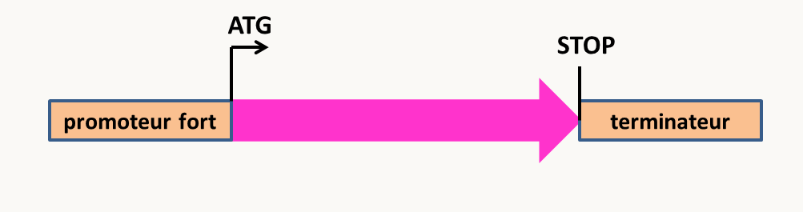Figure 81 : cassette permettant la surexpression d'un gène. La séquence codante en rose est placée sous le contrôle d'un promoteur fort. Le terminateur est ajouté pour une terminaison correcte de la transcription, ce qui stabilise l'ARN messager.
Pour ce genre d'expérience, il n'est évidemment pas nécessaire d'inactiver le(s) gène(s) déjà présents. Pour s'assurer de la sur-expression du produit, il faut regarder le niveau d'expression de la protéine dans des extraits de protéines totales (il est par exemple possible de le révéler dans certains cas par un traitement immunologique).
Ce type d'expérience permet d'apporter des éléments sur la fonctionnalité de protéines. Par exemple, chez Caenorhabditis elegans, il existe deux types de vers qui ont un comportement soit solitaire, soit grégaire. La différence est liée à la présence dans les populations d'un gène polymorphe présentant deux allèles. Ce gène npr-1 code pour un produit qui ressemble à un récepteur de neuropeptides. L'allèle solitaire est dominant sur l'allèle grégaire. L'analyse moléculaire des deux allèles montre qu'ils sont tous les deux fonctionnels. L'hypothèse faite est donc que le produit de l'allèle grégaire fonctionne moins bien que celui de l'allèle solitaire. Pour tester ceci, des œufs de la souche grégaire ont été injectés par différentes quantités d'ADN contenant les allèles grégaires ou solitaires. Alors qu'avec l'allèle solitaire toutes les quantités testées donnent des souches transformées avec un comportement solitaire, dans le cas de l'allèle grégaire les seules les souches issues du traitement avec la quantité la plus importante ont un comportement solitaire. Cela montre qu'effectivement l'allèle grégaire code probablement pour une protéine moins fonctionnelle que celle codée par l'allèle solitaire.
Comment modifier un seul nucléotide dans un gène
Pour analyser finement le rôle d'une protéine ou d'un ARN, il est souvent nécessaire de modifier un seul acide aminé ou nucléotide. Cela peut se faire soit en réintroduisant un allèle modifié comme voulu dans une souche délétée pour l'allèle sauvage du gène. Une autre possibilité rendue maintenant simple grâce au système CRISPR/CAS9 est de modifier in situ de manière dirigée le nucléotide (figure 89).
Figure 82 : modification de gènes utilisant le système CRISPR/CAS9. Le système CRISPR/CAS9 dérive d'un mécanisme de défense bactérien vis à vis des bactériophages. Il aboutit à la coupure double brin d'un ADN de séquence spécifique via l'hybridation avec un ARN guide et un assemblage avec la nucléase CAS9. La longueur de la séquence qui s'hybride est de 20 nucléotides, ce qui est en général suffisant pour que l'ARN guide ne s'hybride qu'avec une seule séquence dans le génome, même si celui-ci est complexe comme le génome humain. Néanmoins, la reconnaissance des 7 premiers nucléotides étant moins importante, il est donc possible d'avoir des coupures indésirables. La seule contrainte pour la coupure est la présence après la séquence d'hybridation d'un dinucléotide GG espacé par un nucléotide de la région d'hybridation (séquence PAM pour Protospacer Adjacent Motif: NGG) si la protéine CAS9 provient de Streptococcus pyogenes. Notez que cette séquence PAM est différente entre les différentes endonucléase CAS9 et il est donc possible de couper à différents endroits en utilisant différentes CAS9. Notez qu'il existe des programmes qui permettent de choisir le site de coupure idéal. Une fois la cassure double brin exécutée par la protéine CAS9 au niveau du 16ème nucléotide hybridé, elle est réparé par la machinerie cellulaire, soit via le système de réparation des cassures double brin, soit via le système de non-homologous end joining. Si aucune matrice n'est fournie (cas n°1), la réparation à l'identique entraîne une nouvelle coupure et ce jusqu'à ce qu'une mutation (en bleu) au site de coupure empêchant l'hybridation se produise. Cela aboutit donc à la création de mutations ponctuelles (faux-sens, non-sens ou frameshift) au site de coupure. Si une cassette de délétion est fournie comme matrice pour exécuter la réparation, ceci peut aboutir au remplacement du gène par le marqueur de résistance (cas n°2), enfin une matrice portant une mutation désirée (en rouge) peut être fournie (cas n°3); dans ce cas la réparation peut aboutir à un changement précis de nucléotide ou par exemple à une délétion propre entre les codons start et stop d'un gène.
Le système CRISPR/CAS9 est maintenant bien maîtrisé chez de nombreux organismes. Dans certains cas, la nucléase CAS9 et l'ARN guide sont exprimés via des transgènes, comme par exemple chez certains champignons. Dans ce cas, la nucléase CAS9 peut être contrôlé via un promoteur qui permet de réguler le timing et/ou le lieu de création des mutations, comme avec les systèmes CRE/LOX ou FLP/FRT. Il est aussi possible d'introduire dans les cellules par électroporation directement le complexe CAS9/ARN guide produit in vitro (des compagnies fournissent directement ce type de produits). Les généticiens travaillant sur les plantes et les animaux préfèrent généralement cette deuxième possibilité. De même, le système CRISPR/CAS9 peut permettre la construction de multiples mutants en une seule étape, soit en exprimant plusieurs ARN guides, soit en ciblant une région de séquences identiques dans plusieurs gènes (ce qui peut être le cas par exemple de gènes appartenant à des familles multigéniques).
Malgré tout, il existe d'autres stratégies qui permettent d'introduire à volonté des mutations dans un génome. Chez les bactéries, le système basé sur un plasmide suicide décrit figure 86 permet ce type de modification du génome. Chez les champignons, une méthode alternative consiste à co-transformer deux ADN: un fragment linéaire portant la mutation désiré et un plasmide circulaire portant un marqueur de sélection et une séquence permettant son intégration à un autre endroit du génome de préférence sur un autre chromosome (figure 90). Les transformants sont sélectionnés grâce au marqueur présent sur le plasmide. On constate expérimentalement qu'une large fraction des transformant a non seulement intégré le plasmide via un crossing-over, mais a aussi intégré l'autre molécule via deux crossing-over (généralement dans 5-10% des transformants). Il suffit ensuite de sélectionner moléculairement (par PCR et/ou séquençage) quels transformants ont eu les deux modifications. Il est aussi possible de se débarrasser du plasmide intégré en croisant un "bon" transformant avec la souche sauvage: dans la descendance, 25% des individus porteront seulement la mutation désirée (si le plasmide s'intègre évidemment à un site indépendant génétiquement de l'allèle construit).
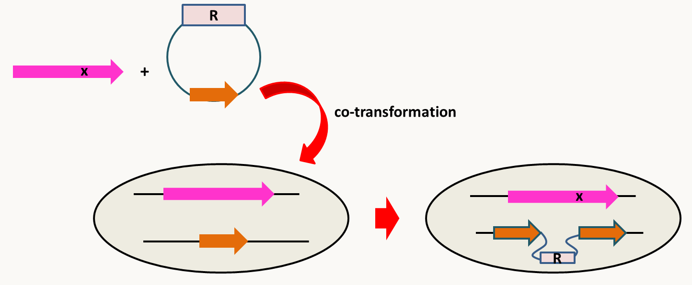Figure 83 : modification de gènes utilisant une co-transformation.
En résumé, il est maintenant possible de construire assez facilement chez pratiquement tous les organismes des allèles nuls par remplacement ou délétions propres, de sur-exprimer ou déréguler des gènes et même d'en changer un seul nucléotide. Ces technologies sont évidemment mises à profit par les chercheurs pour comprendre le vivant, mais aussi par les industriels et les agronomes pour améliorer ou modifier les propriétés des organismes: il s'agit des technologies qui permettent la production des organismes génétiquement modifiés ou OGM. Dans le contexte médical, ces mêmes technologies vont être connues sous le terme de thérapie génique et dans ce cas, il s'agit souvent de réparer un gène déficient. Notez que les nouvelles technologies basées sur CRISPR/CAS9 permettent de produire facilement des souches OGM où un seul nucléotide est changé et où il n'y a donc plus de marqueur de résistance (qui est une des critiques souvent formulées à leur encontre). Fondamentalement, elles ne sont donc pas différentes de souches obtenues par mutagenèse classique qui socialement semble poser moins de problème d'acceptation. Néanmoins, contrairement à la mutagenèse classique qui mime ce qu'il se passe dans la nature: mutations aléatoires suivies de sélection (ici exercée par le généticien, l'industriel ou l'agronome), la mutagenèse inverse permet d'obtenir des mutations de manière dirigée, ce qui n'est pas sans rappeler le lamarckisme...
La mutagenèse classique
La mutagenèse classique permet produire toute une palette de mutations ayant des effets divers sur les gènes allant de leur inactivation jusqu'à leur dérégulation en passant par des modifications du fonctionnement des protéines qu'ils codent. Elle se passe en deux étapes principales:
l'application du traitement mutagène
la sélection des mutants
L'application du traitement mutagène
Même si celui-ci n'est pas obligatoire, le faible taux des mutations spontanées entraîne dans la grande majorité des cas, l'utilisation d'un traitement mutagène. Ce traitement va dicter en fonction de sa spécificité le type de mutations qui vont être obtenues; je vous renvoie aux sections sur les modalités et fréquences d'apparition des mutations dans le chapitre 1 pour en savoir plus. De même, le traitement mutagène va moduler le type de clonage, c'est à dire d'identification du/des gène(s) mutés, qui pourra être effectué par la suite. Actuellement, trois grands types de mutagènes sont utilisés:
La mutagenèse classique aux UV ou avec des produits chimiques mutagènes.
D'un point de vue de la sécurité, les UV sont préférables en particulier depuis que du matériel facile d'utilisation et parfaitement sécurisé est disponible. Cependant, le spectre des mutations obtenues avec les UV ne permet pas toujours d'obtenir ce que l'on désire. De même, certains organismes sont très résistants aux traitements avec des UV. Les mutagènes chimiques sont donc utilisés. Il existe alors des conditions draconiennes d'utilisation de ces produits qui se fait dans des pièces sécurisées. Pour que ce type de traitement soit efficace, il faut que de nombreuses mutations soient produites. Les mutations apparaissant au hasard dans le génome, beaucoup d'entre elles vont toucher des gènes essentiels et donc après le traitement le taux de survie va être fortement diminué. En pratique, il faut donc partir d'un effectif suffisamment grand pour tenir compte de cette létalité. Réciproquement, le taux de survie est une indication de l'efficacité du traitement mutagène. Classiquement, un taux de survie de 1 à 5% est indicatif que le traitement a bien fonctionné et que de nombreuses mutations ont été produites. Les mutations obtenues avec ce type de traitement sont le plus souvent ponctuelles mais il est aussi possible d'obtenir avec certains produits des délétions. Elles peuvent inactiver des gènes, modifier leur fonctionnement voir augmenter leur fonctionnement. Ce type de mutagenèse permet donc d'obtenir des mutations qui ont un large éventail d'effets. Par contre leur identification moléculaire est plus complexe que les deux autres types de mutagenèse. Nous verrons un exemple de chacune des trois méthodes possibles d'identification de ces mutations dans une section suivante qui sera dédié à ce problème.
La mutagenèse insertionnelle par transformation (& le REMI) ou par transposition.
La mutagenèse insertionnelle par transformation se base sur les propriétés de l'intégration de l'ADN exogène introduit dans des cellules. Il est bien évident que ces évènements d'intégration sont sélectionnés grâce à la présence sur l'ADN introduit d'un marqueur de sélection (gène de résistance à un antibiotique, marqueur d'auxotrophie ...). Chez la majorité des organismes, l'ADN transformé recombine via le système de non-homologous end joining (voir tableau ci-dessus), c'est à dire ne faisant pas appel à la présence de séquences homologues. Ces morceaux d'ADN en s'insérant vont inactiver ou modifier l'expression de gènes. Le plus souvent le processus d'intégration est complexe et modifie profondément la structure de l'ADN qui s'insère (insertion de plusieurs copies du fragment d'ADN) et celle de l'ADN situé au point de jonction (délétion ou duplication de la séquence d'insertion). Des chercheurs ont constaté chez certains organismes que si l'ADN est préalablement linéarisé par un enzyme de restriction et que l'enzyme de restriction est aussi ajouté dans le mélange de transformation, alors l'intégration se produit proprement (une seule copie de l'ADN est intégrée et l'insertion se fait sans délétion ou duplication à une séquence qui correspond à un site de restriction de l'enzyme utilisé (figure 91). Ce type de mutagenèse est appelée REMI pour Restriction Enzyme Mediated Insertional mutagenesis.
Figure 84 : la mutagenèse par REMI.
L'inactivation par insertion peut aussi se faire en utilisant des transposons. Chez les champignons, le système est basé sur les propriétés du gène codant la réductase du nitrate (figure 92).
Figure 85 : la mutagenèse insertionnelle par transposition chez les champignons. La souche de départ contient un transposon modifié contenant un marqueur de résistance bactérien et une origine de réplication fonctionnelle chez Escherichia coli. Il est inséré entre le promoteur et la séquence codante du gène nia codant pour la réductase des nitrates. Elle contient aussi la transposase sous le contrôle d'un promoteur modulable. Du fait de l'insertion du transposons, le gène nia n'est pas exprimé; la souche est donc incapable d'utiliser le nitrate comme source d'azote (elle est aussi résistante au chlorate ce qui a permis de sélectionner l'insertion du transposon dans le gène nia). L'expression de la transposase est induite via le promoteur modulable. Elle permet l'excision du transposon, ce qui est facilement sélectionnable en recherchant les souches capable d'utiliser le nitrate comme source d'azote. Dans une large fraction de ces souches excisées, le transposon s'est réinséré au hasard dans le génome. L'identification de la région dans laquelle le transposons s'est réinséré est facile grâce au marqueur de résistance bactérien et à l'origine de réplication (voir figure 84).
C'est néanmoins chez Drosophila melanogaster que le système a été perfectionné en utilisant l'élément P (figure 93). Nous avons vu que ce transposon à ADN de type II est nouvellement arrivée chez cette mouche (voir section sur les fréquences d'apparition des mutations du chapitre 1). Il est capable de transposer d'un vecteur plasmidique dans l'ADN chromosomique des noyaux des cellules germinales. Ses propriétés en font un vecteur de choix pour introduire de l'ADN dans la drosophile et pour faire des mutants car il transpose à haute fréquence, dans des conditions bien contrôlables, il n'a besoin pour cela que de la transposase spécifique codée par l’élément P lui-même et des quelques dizaines de nucléotides présents à ses deux extrémités, les séquences ITR qu’on appelle les " pieds " de P.
Figure 86 : la transformation et la mutagenèse par transposition de l'élément P chez la drosophile. Deux plasmides différents sont co-injectés dans des œufs de drosophile 1h à 1h30 après la ponte, à l’aide d’un micromanipulateur. Un porte un transposon modifié, l’autre la source de transposase produite via un promoteur fort. A cet âge les embryons sont sous forme de syncytium. Le transposon modifié porte au minimum un site de clonage et un marqueur de transgénèse (ici le gène white, la souche réceptrice étant alors mutante white avec des yeux blancs et de type M, c'est à dire dépourvue de l'élément P), placés entre les pieds de l'élément P. Le plasmide portant le gène de la transposase pénètre dans les noyaux, y est transcrit et ensuite l'ARNm produit est traduit dans le cytoplasme syncytial de l’embryon. La transposase entre dans les noyaux des cellules souches à l'origine de la lignée germinale en même temps que le plasmide contenant le transgène; elle catalyse à la fois la coupure du plasmide vecteur contenant le transgène au niveau des "pieds de P" et de l'ADN chromosomique au hasard, et y insère le transgène. Le transfert de gènes est accompli avec une efficacité raisonnable qui fait que l'inspection visuelle des mouches provenant des oeufs injectés est suffisante pour obtenir des embryons avec des yeux rouges dans lesquels le transposon s'est inséré avec succès. Le transposons transféré est alors stable et se transmet fidèlement aux générations suivantes. La transposase fortement exprimée peut aussi être intégrée de la même manière dans le génome. Elle va alors provoquer la transposition de l'élément P à d'autres endroits du génome et donc faire le traitement mutagène. Il ne faut pas oublier que la drosophile est diplobiontique et que pour obtenir les mutations à l'état homozygote, il faudra faire deux séries de croisements. Au cours de ces croisements, il est simple d'identifier les descendants dépourvus de transposase afin que les insertions des transposons soient stables. Le transposon a été modifié pour faciliter son utilisation. Par exemple, on peut ajouter des séquences plasmidiques (ori et marqueur de résistance) qui permettront le clonage ultérieur des séquences génomiques flanquantes (figure 94). On peut aussi ajouter des promoteurs forts ou un enhancer qui va déréguler les gènes environnants. L'ajout de la séquence codante de la GFP permet de voir l'expression des gènes au point d'insertion, etc.
Les mutagenèses insertionnelles génèrent donc comme leur nom l'indique des mutants d'insertion qui, le plus souvent, sont des allèles nuls ou ayant une expression modifiée. Le spectre est donc plus réduit que les traitements mutagènes classiques aux UV ou produits chimiques. Mais des méthodes simples permettent d'identifier rapidement les gènes dans lesquelles les insertions se sont produites (la figure 94 en donne deux exemples).
Figure 87 : deux méthodes pour identifier les sites d'insertion. En haut, si la séquence insérée contient un marqueur bactérien de résistance à un antibiotique et une origine de réplication (voir figure 92 et 93), il suffit de couper l'ADN génomique de la souche d'intérêt porteuse de l'insertion avec un enzyme de restriction qui ne coupe pas dans l'ADN inséré et de religuer les ADN. Le mélange est ensuite transformé dans Escherichia coli. Seul le plasmide porteur de l'origine de réplication va pouvoir se propager dans la bactérie. Il rendra les bactéries résistantes à l'antibiotique et pourra facilement être purifié et séquencé. En bas, si les régions permettant un clonage dans une bactérie ne sont pas présentes, il suffit de faire une "PCR inverse". Pour ceci, il faut couper l'ADN de la souche porteuse de l'insertion par un enzyme de restriction et recirculariser l'ADN avec une ligase. Une amplification par PCR avec des amorces judicieusement placées permet d'amplifier un fragment d'ADN contenant la jonction.
Le criblage de banques de mutants
La disponibilité de collections extensives de mutants générés par mutagenèse inverse permet d'envisager leur criblage direct. Pour rappel, de telles banques sont disponibles chez plusieurs bactéries (banques obtenues par plasmide suicide chez Escherichia coli, Bacillus subtilis...), Caenorhabditis elegans (banque RNAi), Neurospora crassa et bien évidemment chez Saccharomyces cerevisiae chez qui elles ont été obtenues en premier. La méthodologie la plus brutale consiste à cribler les mutants un par un. Dans le cas des banques bactériennes et de levure, elles se présentent dans des microplaques: des cribles simples peuvent donc être directement appliqués en repiquant les microplaques avec des outils appropriés, ce qui facilite leur mise en place. Bien évidemment, les banques étant référencées, il est facile d'identifier les gènes dont les mutations sont intéressantes.
Chez Saccharomyces cerevisiae, la stratégie a été améliorée afin de permettre des cribles dans des expériences de compétitions. En effet, chaque délétion est identifiée par deux séquences spécifiques: les uptag et downtag. Celles-ci vont permettre de suivre spécifiquement chacune des souches mutantes dans un mélange de toutes les souches (figure 95).
Figure 88 : en haut, structure des cassettes de délétion; les uptag et downtag sont des séquences de 20 pb spécifiques à chacune des délétions. Elles permettent donc d'amplifier spécifiquement les jonctions des délétions dans un mélange en utilisant les couples d'amorces rouge ou bleu. Les régions en bleu de part et d'autre des uptag et downtag sont communes à toutes les délétions et permettent d'amplifier les délétions marquées pour le séquençage à haut débit. En bas, en partant d'un mélange où chaque souche mutante est présente en même quantité, l'application d'une sélection va modifier les proportions des différentes souches en fonction du rôle de chacun des gènes délétés. Il est simple de savoir les souches favorisées ou défavorisées en analysant l'ADN du mélange final en comparaison avec celui du mélange initial, soit par hybridation sur micropuces des uptag et downtag, soit par séquençage à haut débit en utilisant les régions communes à toutes les délétions pour amorcer les réactions.
Il va de soi que les seuls types de mutants qui vont pouvoir être obtenus sont ceux initialement présents dans la collection. Il s'agit le plus souvent d'allèle nuls, bien que les collections de "mutants par RNAi" chez Caenorhabditis elegans sont plutôt des "hypomorphes", c'est à dire des mutants ayant une diminution partielle de l'activité des gènes ciblés par le RNAi car leur expression n'est pas totalement inhibée, quelques ARNm pouvant être traduits avant d'être dégradés.
L'application d'un type ou un autre de traitement mutagène dépend non seulement du spectre de mutations que l'on souhaite mais aussi des organismes auxquels on s'adresse. En effet, Les microbes poussant sur boite de Pétri (bactéries, levures, champignons...) se prêtent bien au traitement mutagène avec les UV. Par contre ceux-ci sont peu pénétrants et ne pourront pas par exemple provoquer des mutations dans les organismes aquatiques (algues et protistes) ou les organismes pluricellulaires qui ont une lignée germinale volumineuse ou protégée (animaux et plantes). Il est donc souhaitable d'utiliser dans ce cas un traitement chimique. Les rayons X sont plus pénétrants mais vont essentiellement causer des défauts chromosomiques (larges délétions, inversions, translocations), qui vont par la suite être difficiles à analyser. Les systèmes de mutagenèses insertionnelles ont longtemps été préférés car l'identification des gènes mutés est facile. Nous verrons que l'avènement des méthodes de séquençage à haut débit renverse actuellement cette tendance.
La sélection des mutants: les cribles
Le but des expériences de mutagenèse est d'obtenir des mutants qui ont un phénotype voulu afin d'étudier certains processus. Comme ces expériences sont souvent lourdes et peuvent être dangereuses si des produits mutagènes puissants sont utilisés, il est important de minimiser au maximum l'expérimentation. Ceci passe donc par la mise au point de systèmes astucieux permettant de récupérer les mutants d'intérêt. Il faut donc mettre au point ce que l'on appelle un crible de sélection.
Ce crible de sélection peut permettre de récupérer directement les mutants d'intérêt. Ce sont des cribles de sélection dit positifs. Au contraire les cribles négatifs impliquent le test de tous les individus pour trouver ceux qui seront intéressants. Il est évident que ce type de crible est beaucoup plus lourd et consommateur en matériel ! Par exemple, afin d'identifier la cible moléculaire d'un antibiotique, il est possible de rechercher deux types de mutants : des mutants résistants à l'antibiotique ou des mutants encore plus sensibles que les cellules sauvages dits mutants hypersensibles (figure 96):
Pour rechercher les mutants résistants, il existe un crible positif très simple. Il suffit d'étaler les cellules à la sortie du traitement mutagène sur du milieu contenant l'antibiotique. "Tout ce qui pousse" est bon.
Par contre, dans le cas réciproque où l'on recherche des mutants hypersensibles, il faut impérativement à la sortie du traitement mutagène étaler les cellules sur du milieu sans antibiotique et ensuite repiquer les colonies obtenues sur du milieu avec antibiotique. Les cellules qui poussent sur le premier milieu mais pas sur le suivant sont les bonnes: on a donc affaire à un crible de sélection négatif typique.
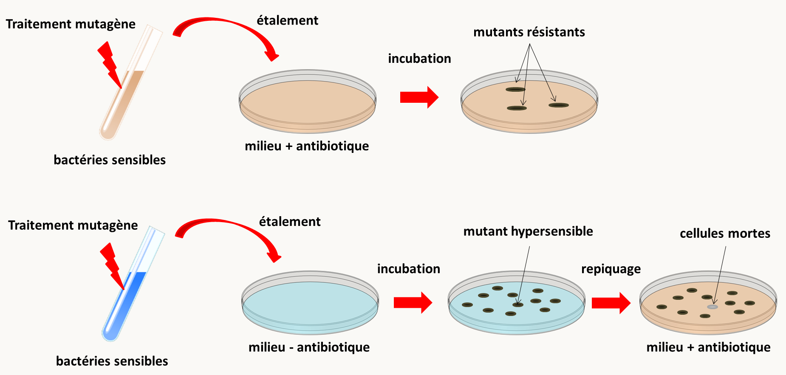Figure 89 : en haut, crible de sélection positif pour sélectionner des mutants résistants; en bas, crible de sélection négatif pour sélectionner des mutants hypersensibles.
Les cribles de sélection font appel à l'imagination des généticiens. Pour vous familiariser avec les techniques de mutagenèse, nous allons donc en voir trois différents.
La sélection de mutations de la chaîne respiratoire chez la levure Saccharomyces cerevisiae
La levure Saccharomyces cerevisiae est un organisme aérobie facultatif, c'est à dire qu'elle peut fermenter en absence de source de carbone respirable. Sa croissance peut donc se faire par fermentation en absence d'oxygène ou par la fermentation suivie de la respiration en présence d'oxygène. Il est possible de lui fournir des sources d'énergie non fermentable et donc uniquement utilisable par la respiration (glycérol ou lactate). Ce système est donc idéal pour sélectionner des mutants affectant la respiration et ainsi de décortiquer le système respiratoire. La recherche de mutants incapables de respirer se fait en recherchant après traitement mutagène des souches qui pousse sur un milieu fermentable (milieu contenant du glucose) mais qui ne pousse pas sur milieu uniquement respirable (milieu contenant du glycérol ou du lactate). Ce crible est donc un crible négatif. Il conduit à l'isolement de mutants ayant acquis une mutation soit de l'ADN mitochondrial (mutant rho- ou mit-) ou de l'ADN nucléaire (mutant pet-). D'autres cribles permettent d'obtenir des mutants plus spécifiques. Par exemple, c'est en utilisant le crible ci-dessus avec du lactate qu'ont été récupérés des mutants dans le gène codant le cytochrome C (qui est un intermédiaire du transport des électrons dans la chaîne respiratoire). En fait, la levure possède 2 gènes qui codent pour le cytochrome C. L'un assure 95% de la production de cytochrome C (iso1) l'autre 5% (iso2). On s'est aperçu par hasard qu'un mutant déficient dans la production iso1 peut respirer en utilisant du glycérol comme source de carbone mais pas du lactate (il est probable que la respiration du glycérol nécessite moins de cytochrome C que celle du lactate et que les 5% iso2 suffisent pour permettre la respiration). Ceci n'est pas le cas de la majorité des mutants affectés dans la chaîne respiratoire. Il est donc possible de récupérer assez spécifiquement des mutants de l'iso1 en sélectionnant par réplique des souches qui respirent sur glycérol mais pas sur lactate. C'est toujours un crible négatif.
Un autre crible disponible est l'utilisation de benzidine qui colore en bleu foncé les hémoprotéines. La coloration est plus sensible aux variations de la quantité de cytochrome C qu'à celles des autres cytochromes. Pour chercher des mutants déficients en cytochrome C, il suffit donc de rechercher des colonies bleu clair parmi les sauvages qui sont bleu foncé. Il s'agit donc là d'un crible positif.
La sélection de drosophiles femelle-stériles
L'obtention de mutants de drosophile femelle-stériles permet d'identifier des gènes qui interviennent dans la fabrication des ovocytes. Plusieurs gènes sont impliqués. Certains sont localisés sur le chromosome X et d'autres sur les autosomes. Nous allons voir un crible qui permet d'identifier des gènes sur le chromosome X. L'utilisation de drosophiles pendant la mutagenèse est délicate. En effet, le traitement mutagène affecte la lignée germinale des mouches traitées et la révélation de l'effet mutagène se fait sur les générations suivantes. Comme dans toutes les mutagenèses, les mouches doivent être traitées individuellement afin de les différencier et d'obtenir des allèles mutants indépendants. Dans le cas, de mutations de stérilité, le crible est en plus compliqué par le fait que les mouches femelles porteuses ne laisseront pas de descendance, en particulier des mutations de stérilité femelle dominante ne pourront être conservées à l'aide de mouches femelle ! Il faut donc un crible qui permet de mettre en évidence la stérilité tout en conservant les mutants! De même, la biologie des mouches (où des fécondations multiples se produisent) fait que l'on doit s'assurer dès le départ de l'expérience que les mouches femelles utilisées sont vierges, afin d'obtenir des résultats interprétables. Les généticiens de drosophile ont donc mis au point une armada d'outils pratiques pour effectuer des mutagenèses dans de bonnes conditions (figure 97).
Figure 90 : crible de sélection de mutants de stérilité femelle sur le chromosome X chez la drosophile. Le traitement mutagène a été effectué sur des mâles à l'aide de l'EMS (éthyle méthyle sulfonate). Ils portaient sur leur chromosome X un allèle vermillon qui donne une couleur rouge vive aux yeux et qui est facilement détectable (chromosome Xv en rouge qui portera donc les mutations). Ces mâles ont ensuite initié la série de croisements décrits afin in fine de sélectionner les mutants d'intérêt.
Chez les organismes diplobiontiques comme la drosophile, la révélation des mutations récessives prend donc au moins deux générations. Il va de soi que ce type de crible implique un travail considérable.
La sélection de mutations qui affectent la régulation par la lumière bleue chez Neurospora crassa
Parfois, le criblage de mutations passe par la construction d'outils appropriés. Examinons plus en détail un exemple très élégant chez le champignon filamenteux Neurospora crassa qui présente un rythme circadien de la production de conidies. Ce rythme est contrôlé par la lumière dans la zone du spectre qui donne la lumière bleue. Des gènes régulés par la lumière bleue ont été isolés et deux premiers gènes de régulation avait été identifiés (wc-1 et wc-2). Il semblait aux expérimentateurs que plusieurs gènes de régulation devaient encore être identifiés. Pour ceci le système décrit sur la figure 98 a été mis au point.
Figure 91 : mise au point d'un crible de sélection de mutants de régulation par la lumière chez Neurospora crassa. Le promoteur du gène al-3 qui est régulé par la lumière a été fusionné à la séquence codante du gène mtr. Ce gène code une perméase qui permet l'entrée de certains acides aminés dont le tryptophane et la phénylalanine. Une souche mtr- et trp- est transformée avec cette construction. Les transformants obtenus peuvent pousser sur du milieu + tryptophane que si le champignon est éclairé ! Deux types de cribles positifs vont pouvoir être menés (voir texte).
Ce système fourni deux cribles de sélection positifs :
Premièrement, Il est possible de cribler des mutants qui poussent sur milieu + tryptophane dans le noir. Ces mutants ont une expression constitutive à partir du promoteur al-3. Avec ce système, il est donc facile d'obtenir des mutations dans des répresseurs de al-3. C'est ainsi qu'a été obtenu le gène ccb-1 qui semble être un répresseur de certains gènes régulés par la lumière.
Deuxièmement, il existe un analogue toxique de la phénylalanine, la p-fluorophenylalanine qui entre dans la cellule via le transporteur mtr. La croissance des transformants est donc inhibée à la lumière si l'on met de la p-fluorophenylalanine dans le milieu. Ceci donne un deuxième moyen de sélection positif. Il suffit de sélectionner des mutants qui poussent dans ces conditions. Ceux-ci n'expriment plus mtr à partir du promoteur al-3. Il est de plus possible de faire varier la quantité de p-fluorophenylalanine, ce qui permet d'obtenir des mutants ayant des effets plus ou moins importants. Les cibles des mutations dans ce cas sont donc des activateurs d'al-3. Comme prévu, les gènes wc-1 et wc-2 ont été retrouvés en utilisant ce crible et c'est ainsi qu'ont été identifiés deux nouveaux gènes blr-1 et blr-2. Ces deux gènes ont des effets moins importants que wc-1 et wc-2 qui semblent être les seuls gènes dont les mutations rendent les souches complètement aveugles à la lumière bleue.
Ce système a donc permis de sélectionner des nouveaux gènes qui ont une influence plus subtile sur la régulation par la lumière bleue.
Ces trois exemples montrent donc la diversité des méthodes utilisées pour obtenir des mutants. Une des caractéristiques importantes de ces cribles génétiques est la production de mutants indépendants, c'est à dire provenant d'évènements mutationnels différents. En effet, la sélection des mutants n'est que la première partie du travail (voir figure 99 pour rappel détaillé de la démarche). Pour éviter du travail redondant, il est donc préférable de ne pas faire plusieurs fois le même travail sur des mutants qui ne seraient pas indépendants. En particulier, une fois que les mutants sont obtenus, il faut dans un premier temps les analyser génétiquement afin de:
s'assurer que le phénotype est bien la résultante d'une seule mutation. Pour ceci, il faut analyser la ségrégation des mutations.
répartir les mutations dans les différents gènes identifiés. Pour ceci, le généticien dispose de deux outils principaux, la complémentation et la cartographie.
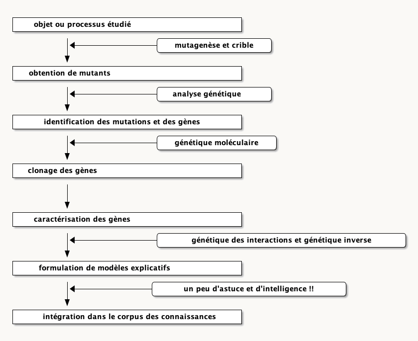Figure 92 : l'obtention des mutants est la première étape de l'analyse génétique.
L'analyse génétique est suivie d'une analyse moléculaire afin d'identifier les gènes dans lesquels ont eu lieu les mutations. Ces trois étapes sont obligatoires avant de pouvoir formuler des modèles et d'entreprendre des analyses supplémentaires pour préciser et vérifier les modèles. Nous allons voir chacune de ces étapes dans les chapitres suivants en commençant par la complémentation.
![démarches suivies au cours des analyses de génétique classique ou inverse. Pour la génétique classique, la démarche démarre par la recherche de mutants sur des critères phénotypiques intéressants pour le processus étudié (mutants d'auxotrophie pour la biosynthèse des acides aminés, mutants de longévité pour le vieillissement, mutants arrêtés à une étape embryonnaire pour l'analyse du développement, etc.); c'est ce l'on appelle une mutagenèse qui aboutit à l'obtention de mutants indépendants. Il faut ensuite caractériser les mutations par les méthodes de la génétique classique. Ensuite, les différents gènes ainsi identifiés par des mutations et qui interviennent dans le processus sont clonés par des démarches de génétique moléculaire (clonage positionnel, par expression fonctionnelle ou séquences complètes des génomes mutants). La formulation de modèles passe par la caractérisation fine des mutants qui fait appel aux méthodes de la biochimie et biologie moléculaire, de la cytologie, de la génétique des interactions afin d'obtenir des mutants supplémentaires, et éventuellement de la génétique inverse pour vérifier certaines hypothèses.<br> La génétique inverse consiste dans l'obtention par les techniques de l'ADN recombinant in vitro de mutations spécifiques dans des gènes dont on connait la séquence mais généralement pas le rôle, et la réintroduction de ceux-ci par transformation ou transfection dans un organisme afin d'obtenir des mutants de ces gènes; les effets obtenus sont ensuite analysés par les mêmes techniques que ceux obtenus par mutagenèse classique afin de formuler des modèles de fonctionnement. Ceci aboutit souvent à l'identification de nouveaux gènes candidats qui vont pouvoir à leur tour être analysés par génétique inverse.](img/image072.png)

![plasmide typique utilisé pour transformer des cellules eucaryotes via A. tumefaciens. Le plasmide porte un marqueur de sélection (résistance) qui permet la sélection à la fois dans E. coli et A. tumefaciens. Une origine de réplication permet la réplication dans E. coli et une autre la réplication dans A. tumefaciens. La région STA assure la stabilité du plasmide dans A. tumefaciens. Ces régions vont permettre d'amplifier le plasmide dans un premier temps en utilisant E. coli et dans un second de le transférer dans A. tumefaciens. La région transférée dans la cellule eucaryote est délimitée par deux frontières de séquences spécifiques. Entre ces deux frontières sont introduits un marqueur de sélection qui fonctionne dans l'organisme à transformer (un gène de résistance à un antifongique ou un herbicide par exemple) et des sites de clonage multiple qui vont permettre d'insérer les cassettes. L'ADN est donc transféré sous forme linéaire double brin.](img/image076.png)
![le Double Strand Break Repair entraîne soit la production de conversions soit de crossing over. Lorsqu'un ADN subit une cassure double brin, il peut être réparé en utilisant une molécule d'ADN homologue, c'est à dire possédant la même séquence. Cela peut être le cas dans une cellule diploïde et dans ce cas la deuxième copie peut servir de matrice. Mais c'est aussi le cas après réplication chez les bactéries et les eucaryotes haploïde (en phase G2). Éventuellement, une séquence homologue/homéologue située ailleurs dans le génome peut être utilisée, ce qui conduira à un réarrangement (voir figure 60). La réparation commence par la résection simple brin au niveau de la cassure par une nucléase spécifique et la reconnaissance et l’appariement des deux séquences. Puis, l'ADN du brin intact est ouvert et la portion simple brin d'une des deux extrémités libre du brin à réparer vient s'hybrider avec le brin intact. Le remplissage des "trous" par une polymérase et la fermeture des simples-brins par une ligase conduit à une structure possédant deux jonctions de Holliday. Cette double jonction est résolue par une résolvase et conduit en fonction de l'action de la résolvase au niveau de chaque jonction soit à une conversion soit à un crossing-over (voir figure 79). Les enzymes impliqués dans ce mécanismes sont très conservés au cours de l'évolution: système RecA,B,C,D chez les bactéries et gènes rad/XP/ERCC chez les eucaryotes.](img/image078.png)
![la résolution de la jonction de Holliday se fait par deux nouvelles coupures des simples brins. Suivant la position de ces coupures on aura ou non échange de séquences flanquantes. Par exemple, s’il y a coupure et raboutage des deux brins qui ont subi l’échange (flèches orangées), il n’y aura pas de crossing-over visible et seul un très petit fragment est échangé sur un seul brin. En revanche si les deux coupures ont lieu sur les deux brins qui n’ont pas subi l’échange (flèches roses), un crossing-over se produira.](img/image079.png)

![remplacement de gènes chez Saccharomyces cerevisiae en utilisant le marqueur d'auxotrophie à l'uracile URA3. Il est possible de faire le remplacement directement sur une souche haploïde mais si le gène est essentiel, aucun mutant ne sera obtenu. Il est donc conseillé comme sur le schéma de transformer avec la cassette de remplacement une souche diploïde. Dans ce cas, une seule des deux copies est remplacée car le remplacement simultané des deux copies est extrêmement rare. Les transformants sont sélectionnés sur leur retour à la prototrophie alors que la souche de départ est auxotrophe pour l'uracile. L'efficacité du remplacement est telle que seule une vérification par PCR est nécessaire pour s'assurer que le remplacement a bien été fait. Pour ceci, il faut utiliser des amorces situées à l'extérieur de la région d'homologie utilisée pour faire le remplacement (amorces 1 et 2). Seuls les transformants ayant un remplacement correct donneront des bandes de tailles connues en utilisant les couples d'amorces 1+3 et 2+4. Une méiose permet d'obtenir des tétrades. Si les 4 ascospores sont viables alors le gène n'est pas essentiel. Si seulement les deux spores URA3<sup>-</sup> sont viables alors le gène est essentiel. Chez les champignons filamenteux, il est recommandé de vérifier la délétion par Southern blot car il existe des évènements d'insertion complexes ou l'allèle remplacé et l'allèle sauvage sont tous les deux présents. De même, la plupart étant essentiellement haploïdes, l'obtention de remplacement de gènes essentiels est plus difficile mais pas impossible.](img/image084.png)
![remplacement de gènes chez la souris. Dans le cas d'organismes pluricellulaires, il faut transformer la lignée germinale, ce qui n'est pas simple même si des systèmes à base de virus peuvent être envisagés. Dans le cas de la souris, le plus simple est de faire le remplacement de gènes sur des cellules totipotentes en utilisant la résistance à la généticine (=G418). Comme dans le cas de la levure, une seule des deux copies est remplacée. La vérification d'abord par PCR comme chez la levure permet de trier les candidats. Il est recommander de vérifier ces candidats par Southern Blot car il existe des évènements d'intégration complexes que seul une analyse plus poussée permet de cribler. Une fois le remplacement assuré, la lignée totipotente mutante est injectée dans des embryons de souris; il est recommandé de choisir des souris de phénotypes différents pour faciliter la détection des souriceaux chimère ou mosaïques qui vont résulter de l'intégration des cellules injectées dans l'embryon; des souris ayant des différences de couleur de pelage offrent une façon simple de trier. Il faut aussi espérer que la lignée germinale des souris mosaïques F0 contient des cellules mutantes afin que leur descendance F1 contienne la mutation; sa présence peut être détectée par PCR comme indiqué figure 84. La descendance F1 sera hétérozygote et devrait donc vivre. Le croisement des descendants hétérozygotes entre eux permet d'obtenir les homozygotes afin d'évaluer leur phénotype. La présence du remplacement et de l'allèle sauvage par PCR permet de déterminer le statut des descendants F2 car ceux-ci peuvent toujours être hétérozygotes ou homozygotes sauvages.](img/image085.png)
![remplacement contrôlé de gènes chez la souris. L'utilisation du système CRE/LOX permet de choisir le lieu et/ou le moment de la délétion. Pour cela, il faut construire des souris portant deux sites loxP autour du gène à déléter. Cela nécessite deux transformations successives avec des cassettes permettant l'insertion des sites loxP en même temps que les marqueurs de sélection qui sont la résistance à la néomycine et à la puromycine. L'apport de la recombinase CRE se fait en croisant des souris obtenues aussi par transgénèse et qui exprime la recombinase soit à partir d'un promoteur fonctionnel dans un lignage cellulaire ou en réponse à un inducteur (la tétracycline par exemple), ce qui va provoquer la recombinaison entre les sites loxP (et donc la délétion du gène) de manière contrôlée.](img/image087.png)
![modification de gènes utilisant le système CRISPR/CAS9. Le système CRISPR/CAS9 dérive d'un mécanisme de défense bactérien vis à vis des bactériophages. Il aboutit à la coupure double brin d'un ADN de séquence spécifique via l'hybridation avec un ARN guide et un assemblage avec la nucléase CAS9. La longueur de la séquence qui s'hybride est de 20 nucléotides, ce qui est en général suffisant pour que l'ARN guide ne s'hybride qu'avec une seule séquence dans le génome, même si celui-ci est complexe comme le génome humain. Néanmoins, la reconnaissance des 7 premiers nucléotides étant moins importante, il est donc possible d'avoir des coupures indésirables. La seule contrainte pour la coupure est la présence après la séquence d'hybridation d'un dinucléotide GG espacé par un nucléotide de la région d'hybridation (séquence PAM pour Protospacer Adjacent Motif: NGG) si la protéine CAS9 provient de Streptococcus pyogenes. Notez que cette séquence PAM est différente entre les différentes endonucléase CAS9 et il est donc possible de couper à différents endroits en utilisant différentes CAS9. Notez qu'il existe des programmes qui permettent de choisir le site de coupure idéal. Une fois la cassure double brin exécutée par la protéine CAS9 au niveau du 16ème nucléotide hybridé, elle est réparé par la machinerie cellulaire, soit via le système de réparation des cassures double brin, soit via le système de non-homologous end joining. Si aucune matrice n'est fournie (cas n°1), la réparation à l'identique entraîne une nouvelle coupure et ce jusqu'à ce qu'une mutation (en bleu) au site de coupure empêchant l'hybridation se produise. Cela aboutit donc à la création de mutations ponctuelles (faux-sens, non-sens ou frameshift) au site de coupure. Si une cassette de délétion est fournie comme matrice pour exécuter la réparation, ceci peut aboutir au remplacement du gène par le marqueur de résistance (cas n°2), enfin une matrice portant une mutation désirée (en rouge) peut être fournie (cas n°3); dans ce cas la réparation peut aboutir à un changement précis de nucléotide ou par exemple à une délétion propre entre les codons start et stop d'un gène.](img/image089.png)

![la mutagenèse insertionnelle par transposition chez les champignons. La souche de départ contient un transposon modifié contenant un marqueur de résistance bactérien et une origine de réplication fonctionnelle chez Escherichia coli. Il est inséré entre le promoteur et la séquence codante du gène nia codant pour la réductase des nitrates. Elle contient aussi la transposase sous le contrôle d'un promoteur modulable. Du fait de l'insertion du transposons, le gène nia n'est pas exprimé; la souche est donc incapable d'utiliser le nitrate comme source d'azote (elle est aussi résistante au chlorate ce qui a permis de sélectionner l'insertion du transposon dans le gène nia). L'expression de la transposase est induite via le promoteur modulable. Elle permet l'excision du transposon, ce qui est facilement sélectionnable en recherchant les souches capable d'utiliser le nitrate comme source d'azote. Dans une large fraction de ces souches excisées, le transposon s'est réinséré au hasard dans le génome. L'identification de la région dans laquelle le transposons s'est réinséré est facile grâce au marqueur de résistance bactérien et à l'origine de réplication (voir figure 84).](img/image092.png)
![la transformation et la mutagenèse par transposition de l'élément P chez la drosophile. Deux plasmides différents sont co-injectés dans des œufs de drosophile 1h à 1h30 après la ponte, à l’aide d’un micromanipulateur. Un porte un transposon modifié, l’autre la source de transposase produite via un promoteur fort. A cet âge les embryons sont sous forme de syncytium. Le transposon modifié porte au minimum un site de clonage et un marqueur de transgénèse (ici le gène white, la souche réceptrice étant alors mutante white avec des yeux blancs et de type M, c'est à dire dépourvue de l'élément P), placés entre les pieds de l'élément P. Le plasmide portant le gène de la transposase pénètre dans les noyaux, y est transcrit et ensuite l'ARNm produit est traduit dans le cytoplasme syncytial de l’embryon. La transposase entre dans les noyaux des cellules souches à l'origine de la lignée germinale en même temps que le plasmide contenant le transgène; elle catalyse à la fois la coupure du plasmide vecteur contenant le transgène au niveau des "pieds de P" et de l'ADN chromosomique au hasard, et y insère le transgène. Le transfert de gènes est accompli avec une efficacité raisonnable qui fait que l'inspection visuelle des mouches provenant des oeufs injectés est suffisante pour obtenir des embryons avec des yeux rouges dans lesquels le transposon s'est inséré avec succès. Le transposons transféré est alors stable et se transmet fidèlement aux générations suivantes. La transposase fortement exprimée peut aussi être intégrée de la même manière dans le génome. Elle va alors provoquer la transposition de l'élément P à d'autres endroits du génome et donc faire le traitement mutagène. Il ne faut pas oublier que la drosophile est diplobiontique et que pour obtenir les mutations à l'état homozygote, il faudra faire deux séries de croisements. Au cours de ces croisements, il est simple d'identifier les descendants dépourvus de transposase afin que les insertions des transposons soient stables.<br> Le transposon a été modifié pour faciliter son utilisation. Par exemple, on peut ajouter des séquences plasmidiques (ori et marqueur de résistance) qui permettront le clonage ultérieur des séquences génomiques flanquantes (figure 94). On peut aussi ajouter des promoteurs forts ou un enhancer qui va déréguler les gènes environnants. L'ajout de la séquence codante de la GFP permet de voir l'expression des gènes au point d'insertion, etc.](img/image093.png)
![deux méthodes pour identifier les sites d'insertion. En haut, si la séquence insérée contient un marqueur bactérien de résistance à un antibiotique et une origine de réplication (voir figure 92 et 93), il suffit de couper l'ADN génomique de la souche d'intérêt porteuse de l'insertion avec un enzyme de restriction qui ne coupe pas dans l'ADN inséré et de religuer les ADN. Le mélange est ensuite transformé dans Escherichia coli. Seul le plasmide porteur de l'origine de réplication va pouvoir se propager dans la bactérie. Il rendra les bactéries résistantes à l'antibiotique et pourra facilement être purifié et séquencé. En bas, si les régions permettant un clonage dans une bactérie ne sont pas présentes, il suffit de faire une "PCR inverse". Pour ceci, il faut couper l'ADN de la souche porteuse de l'insertion par un enzyme de restriction et recirculariser l'ADN avec une ligase. Une amplification par PCR avec des amorces judicieusement placées permet d'amplifier un fragment d'ADN contenant la jonction.](img/image094.png)
![en haut, structure des cassettes de délétion; les uptag et downtag sont des séquences de 20 pb spécifiques à chacune des délétions. Elles permettent donc d'amplifier spécifiquement les jonctions des délétions dans un mélange en utilisant les couples d'amorces rouge ou bleu. Les régions en bleu de part et d'autre des uptag et downtag sont communes à toutes les délétions et permettent d'amplifier les délétions marquées pour le séquençage à haut débit. En bas, en partant d'un mélange où chaque souche mutante est présente en même quantité, l'application d'une sélection va modifier les proportions des différentes souches en fonction du rôle de chacun des gènes délétés. Il est simple de savoir les souches favorisées ou défavorisées en analysant l'ADN du mélange final en comparaison avec celui du mélange initial, soit par hybridation sur micropuces des uptag et downtag, soit par séquençage à haut débit en utilisant les régions communes à toutes les délétions pour amorcer les réactions.](img/image095.png)

![mise au point d'un crible de sélection de mutants de régulation par la lumière chez Neurospora crassa. Le promoteur du gène al-3 qui est régulé par la lumière a été fusionné à la séquence codante du gène mtr. Ce gène code une perméase qui permet l'entrée de certains acides aminés dont le tryptophane et la phénylalanine. Une souche mtr- et trp- est transformée avec cette construction. Les transformants obtenus peuvent pousser sur du milieu + tryptophane que si le champignon est éclairé ! Deux types de cribles positifs vont pouvoir être menés (voir texte).](img/image098.png)